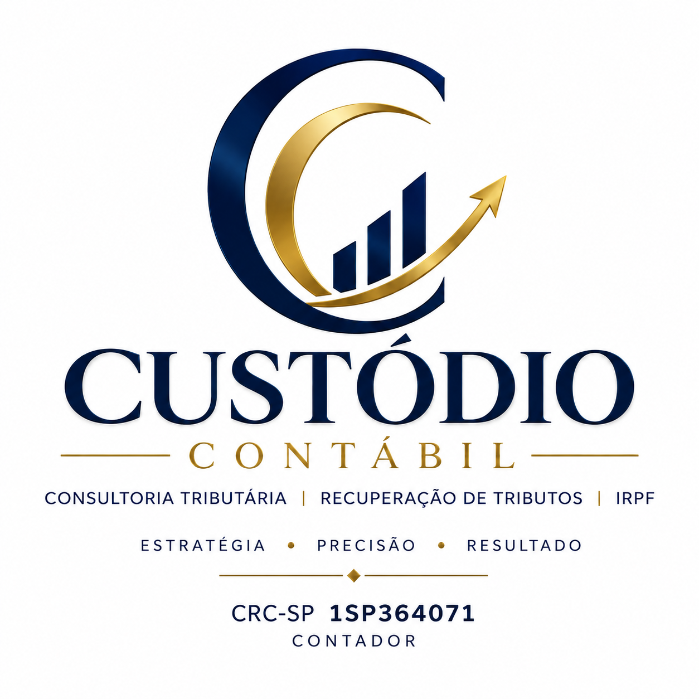

Planejamento tributário
Análise do enquadramento e dos cenários tributários para apoiar escolhas conscientes e legalmente adequadas.

Consultoria tributária e soluções contábeis para quem busca clareza, segurança e melhores resultados.
Cada negócio tem seus desafios e oportunidades. Nosso trabalho é transformar informações contábeis e tributárias em caminhos claros para decisões mais seguras.
Atendimento técnico, responsável e orientado às necessidades de pessoas e empresas.
Análise do enquadramento e dos cenários tributários para apoiar escolhas conscientes e legalmente adequadas.
Identificação de possíveis créditos e pagamentos indevidos, com análise documental e observância da legislação.
Orientação para organização cadastral, fiscal e contábil, conforme a situação de cada empresa.
Orientação e preparação da declaração anual, com atenção aos documentos e às particularidades de cada contribuinte.
Informações e análises para apoiar a gestão, o planejamento e a tomada de decisões.
Acompanhamento e análise de questões tributárias relacionadas ao regime, de acordo com a atividade e a legislação aplicável.
À frente da Custódio Contábil está Thiago Custódio, contador registrado no CRC-SP, com formação nas áreas de Ciências Contábeis e Economia e especialização em gestão e finanças.
A proposta é oferecer atendimento próximo, análise criteriosa e orientação transparente, respeitando a realidade e os objetivos de cada cliente.
Conte um pouco sobre sua necessidade. Vamos entender como podemos ajudar.